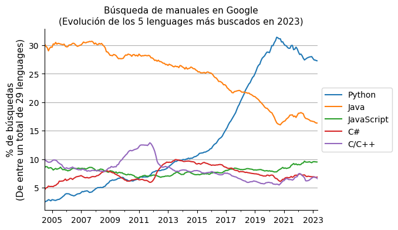

¿Por qué Python?#
2024-02-09
Veámos cómo se codifica el tradicional «Hello, World!» en tres lenguajes de programación diferentes:
C
#include <stdio.h>
int main()
{
printf("Hello, World!");
return 0;
}
JAVA
public class HelloWorld {
public static void main(String[] args) {
System.out.println("Hello, World!");
}
}
PYTHON
print("Hello, World!")
Esta sencilla muestra da una idea de una de las particularidades del lenguaje de programación Python: su concisión. La economía de medios con la que se escriben las instrucciones y la ausencia de verbosidad en su sintaxis convierten a Python en el lenguaje de la mínima expresión. Python se desarrolló en base a un ideario minimalista que el programador puede consultar en cualquier momento simplemente ejecutando el comando import this. En pantalla aparecerá entonces el siguiente decálogo:
The Zen of Python, by Tim Peters
Beautiful is better than ugly.
Explicit is better than implicit.
Simple is better than complex.
Complex is better than complicated.
Flat is better than nested.
Sparse is better than dense.
Readability counts.
Special cases aren't special enough to break the rules.
Although practicality beats purity.
Errors should never pass silently.
Unless explicitly silenced.
In the face of ambiguity, refuse the temptation to guess.
There should be one-- and preferably only one --obvious way to do it.
Although that way may not be obvious at first unless you're Dutch.
Now is better than never.
Although never is often better than *right* now.
If the implementation is hard to explain, it's a bad idea.
If the implementation is easy to explain, it may be a good idea.
Namespaces are one honking great idea -- let's do more of those!
El Zen de Python se encuentra así fácilmente accesible para que los fieles de estas buenas prácticas las repitan como un mantra. Al código Python que sigue estos principios se le llama pythónico y a sus seguidores pythonistas, palabra que suena como a «pitonisa».
Pero esta práctica nada tiene de sibilina, pues la comunidad de seguidores de Python no ha parado de crecer y podría más bien considerársele una religión. Los principios denominados El Zen de Python los escribió en 1999 un ingeniero de software llamado Tim Peters. Definió 19 sentencias para que la número 20, como homenaje, corriera a cargo de Guido van Rossum, el creador de Python. Hasta el momento sin embargo este no la ha completado y el vigésimo mandamiento sigue vacante.
El neerlandés Van Rossun creó Python en 1989 y según ha declarado en alguna ocasión nunca lo concibió con la idea de que se convirtiera en un lenguaje de masas. Y, sin embargo, tres décadas después, Python ha sobrepasado a la mayoría de sus rivales.
Uno de los fundamentos que explican su difusión es lo sencillo que resulta leer el código. Veámoslo en el siguiente ejemplo en el que se imprimen los componentes de una lista.
fruits = ['apple', 'orange', 'banana']
for fruit in fruits:
print(fruit)
Es decir, el código Python para la típica repetición de una tarea se lee como si fuera inglés: for fruit in fruits print fruit, que traducido quedaría algo así como para (cada) fruta en frutas imprimir fruta.
Desde luego, se puede escribir en Python un código que haga la misma tarea pero no sea pythónico. El siguiente ejemplo replica el procedimiento habitual en otros lenguajes de programación:
for index in range(len(fruits)):
print(fruits[index])
Pero claro, el método por el cual se define un índice para recorrer los elementos de la lista quizá ya no resulte tan legible como el anterior. Y Python cuida mucho la inteligibilidad (Readability counts) siendo esta una de sus particularidades más valoradas, ya que en el ámbito de la programación se puede perder una gran cantidad de tiempo tratando de entender qué hace el código escrito por otra persona.
La idea de la sencillez (Simple is better than complex) ha hecho de Python un lenguaje propicio a los principiantes. Es fácil de aprender para empezar a utilizarlo sin necesidad de tener grandes nociones de programación. Y esto ha permitido que profesionales de diferentes campos hayan podido acceder al potencial que ofrece sin ser expertos programadores. Por ejemplo, en el ámbito de la ciencia de datos y del aprendizaje automático.
Además de la sencillez y la sintaxis amigable, hay dos factores de tipo estructural que contribuyen a la satisfacción del usuario inexperto. Uno es el hecho de que sea un lenguaje que se escribe dinámicamente, lo cual quiere decir que en el proceso mismo de la programación se definen las variables sin necesidad de declararlas previamente. El otro es el hecho de que sea un lenguaje interpretable y por tanto los resultados van apareciendo en pantalla inmediatamente sin necesidad de compilar el código antes de su ejecución. Ambas características facilitan el trabajo en especial cuando de lo que se trata es de experimentar, un caso que se da especialmente en el mundo de los datos.
La asequibilidad que presenta Python podría hacer pensar que no está preparado para su uso en aplicaciones complejas. Y de hecho esta es una de las críticas más frecuentes que recibe, puesto que su flexibilidad puede causar problemas al emprender este tipo de proyectos más exigentes, sobre todo si no se sabe bien cómo se gestionan los recursos de computación.
Pero aquí es donde entra en juego la característica que definitivamente convierte a Python en una estrella: la disponibilidad de una enorme cantidad de librerías con funciones listas para su uso en todo tipo de campos, incluso en los más complejos de Deep Learning. Una amplia comunidad de entusiastas comparten sus creaciones de código abierto que son mantenidas por esa misma comunidad facilitando y por lo tanto democratizando el acceso a estas tecnologías.
De manera que esta realidad tan expandida ha hecho de Python el lenguaje versátil por excelencia. Siendo un lenguaje de propósito general, basta con utilizar las librerías adecuadas para hacer tanto una página web como una aplicación de Inteligencia Artificial. La complejidad queda así enmascarada por esos paquetes de funciones que son mantenidos por la comunidad.
En cualquier caso Python resulta lento para ciertas aplicaciones: al fin y al cabo la flexibilidad está reñida con la eficiencia en la ejecución del código máquina generado. Y además para ciertas áreas puede que no se hayan desarrollado las librerías necesarias y por tanto lo adecuado sea utilizar el lenguaje de referencia para esos dominios, donde seguro que hay recursos. Es por ello que se ha hecho famosa la siguiente cita que define el lugar que ocupa Python en el ecosistema actual de los lenguajes de programación:
Python es el segundo mejor lenguaje para todo.
Porque con su crecimiento de usuarios y amplitud de aplicaciones Python parece destinado a ocupar la posición de lengua franca de la codificación. Algo así como el idioma inglés en el lenguaje humano. Aunque parece improbable que vaya a desplazar a lenguajes como C y C++, que son opciones de programación a más bajo nivel y ofrecen mayor control sobre la ejecución de las instrucciones en el procesador. Y tampoco parece probable que acabe con Java, popular en aplicaciones complejas, o JavaScript, que está detrás de la mayoría de las páginas web.

De manera que se podría decir que Python se ha convertido en un fenómeno a partir de unos principios en los que se prioriza la amabilidad frente a la optimización, ganando así adeptos y por medio de ellos funcionalidad. Y en consecuencia más popularidad y más funcionalidad. Un enfoque que ha resultado revolucionario para sorpresa de su propio fundador, que a la hora de dar nombre al lenguaje se inspiró, no en la amenazante serpiente pitón (en inglés python), sino en los Monty Python, el grupo de humoristas británico del que era gran admirador.
(Imagen de portada de Christina Morillo en Pexels.)